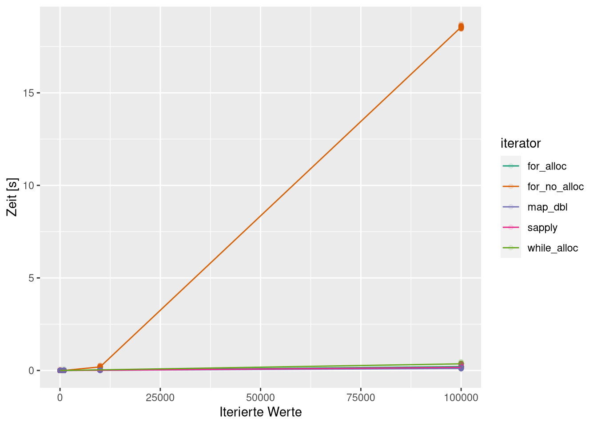

Functionals
Wie wir am Anfang des Semesters bei der Definition unserer eigenen Funktionen ja schon gemerkt haben, sind Funktionen in R von der Struktur her gar nicht so verschieden zu anderen Objekten wie zum Beispiel Datensätzen oder Vektoren.
Sowohl die einen, wie auch die anderen, werden als Namen mit entsprechenden Inhalten im Environment angelegt, wobei aber natürlich bei Datensätzen die Daten damit gemeint sind und bei Funktionen Environment-Verweis, Body und Formals angelegt werden.
Das heißt für R aber auch, dass so genannte Functionals genutzt werden. Diese Gruppe von Funktionen sind solche, die andere Funktionen als Argumente und diese anwenden können. Beispiele für solche Funktionen haben wir auch schon kennen gelernt, die vielleicht aus dem Kapitel zur Aggregation von Daten in EDV1 bekannte across-Funktion ist ein solcher Fall:
iris %>%
group_by(Species) %>%
summarise(across(where(is.numeric),
.fns = list(m = mean, s = sd),
.names = '{.fn}_{.col}'))## # A tibble: 3 × 9
## Species m_Sepal.Length s_Sepal.Length m_Sepal.Width s_Sepal.Width
## <fct> <dbl> <dbl> <dbl> <dbl>
## 1 setosa 5.01 0.352 3.43 0.379
## 2 versicolor 5.94 0.516 2.77 0.314
## 3 virginica 6.59 0.636 2.97 0.322
## # … with 4 more variables: m_Petal.Length <dbl>, s_Petal.Length <dbl>,
## # m_Petal.Width <dbl>, s_Petal.Width <dbl>Hier übergeben wir dem .fns-Argument eine Liste mit Funktionen, die dann auf alle numerischen Spalten des Datensatzes angewandt werden.
Ein anderes, sehr für R typisches Beispiel von Functionals sind sapply, lapply und mapply. Alle drei Funktionen nehmen als Input eins oder mehrere Objekte und eine Funktion, die auf jeden Eintrag de(s/r) übergebenen Objekte(s) angewandt werden soll.
Exemplarisch gucken wir uns sapply an, die Listen5 als erstes Argument erwarten.
Als Objekt nehmen wir iris (was ja wie wir gelernt habe eine aufgemotzte Liste ist) und lassen uns mit sapply für jede Spalte sagen, ob sie numerisch ist:
sapply(iris, is.numeric)## Sepal.Length Sepal.Width Petal.Length Petal.Width Species
## TRUE TRUE TRUE TRUE FALSEFällt Dir was auf?
Wir haben gerade eine Funktion fünf mal ausgeführt, ohne ihr explizit ein Argument zu übergeben. Den (is.numeric(iris$Sepal.Width),is.numeric(iris$Sepal.Length), etc., etc., …)-Teil hat uns sapply abgenommen. sapply ist sogar so weit gegangen, uns die Ergebnisse in einem praktischen Vektor wiederzugeben, hat also irgendwie einen Output für uns erstellt.
Diesen Vektor könnten wir jetzt als Index nutzen, um uns nur die numerischen Spalten ausgeben zu lassen und uns wieder mit sapply die Mittelwerte ausrechnen zu lassen:
sapply(iris[,which(sapply(iris, is.numeric))],
mean)## Sepal.Length Sepal.Width Petal.Length Petal.Width
## 5.843333 3.057333 3.758000 1.199333Die sapply-Funktion macht also im Prinzip nicht viel anderes, als unsere for-Schleifen.
Aufgabe
Baue die oben mit sapply implementierte Mittlung mit for-Schleifen nach.
Dabei soll erst überprüft werden, ob eine Spalte numerische Inhalte hat, wenn dem so ist soll der Mittelwert dieser Spalte berechnet werden.
Verpacke deine Lösung in eine Funktion, die den spaltenweisen Mittelwert zurückgibt.
Überlege dir insbesondere, ob Du den Output-Vektor allozieren kannst und was ein sinnvolles Format dafür wäre.
Antwort
my_col_mean <- function(df){
out <- rep(NA, ncol(df))
names(out) <- names(df)
for(col in names(df)){
if(is.numeric(df[[col]])){
out[col] <- mean(df[[col]])
}
}
return(out)
}
my_col_mean(iris)## Sepal.Length Sepal.Width Petal.Length Petal.Width Species
## 5.843333 3.057333 3.758000 1.199333 NApurrr::map
Eine Alternative zu den *apply-Funktionen ist die map-Familie aus dem purrr-Paket. Im Prinzip sind die identisch zu den *apply-Funktionen, der große Unterschied ist, dass sie spezialisierter sind als erstere.
Diese Eigenschaft ist auch der einzige wirkliche Grund dafür, die functional-Iteratoren den Schleifen vorzuziehen. Code, der so spezifisch für ein Problem wie möglich ist, ist einfach schöner weil schneller verständlich.
Die grundlegende Funktion aus der map-Familie ist das einfache map, das lapply-Analogon. map nimmt also eine Liste oder einen Vektor und eine Funktion als Input und gibt eine Liste zurück:
map(1:10, sqrt)## [[1]]
## [1] 1
##
## [[2]]
## [1] 1.414214
##
## [[3]]
## [1] 1.732051
##
## [[4]]
## [1] 2
##
## [[5]]
## [1] 2.236068
##
## [[6]]
## [1] 2.44949
##
## [[7]]
## [1] 2.645751
##
## [[8]]
## [1] 2.828427
##
## [[9]]
## [1] 3
##
## [[10]]
## [1] 3.162278Alternativ kann mit der sogenannten Funktionsschreibweise auch ein Ausdruck formuliert werden, der für jeden iterierten Wert ausgeführt werden soll:
map(1:10, ~sqrt(.))## [[1]]
## [1] 1
##
## [[2]]
## [1] 1.414214
##
## [[3]]
## [1] 1.732051
##
## [[4]]
## [1] 2
##
## [[5]]
## [1] 2.236068
##
## [[6]]
## [1] 2.44949
##
## [[7]]
## [1] 2.645751
##
## [[8]]
## [1] 2.828427
##
## [[9]]
## [1] 3
##
## [[10]]
## [1] 3.162278Der besondere Vorteil dieser Funktionen gegenüber den *apply-Funktionen, ist dass diese Gruppe von Funktionen ermöglicht, den erwarteten Output einer Iteration klar lesbar zu definieren.
Beispielsweise kann mit map_dbl, map_lgl und map_chr klar festgelegt werden, dass 1. ein atomic-Vektor ausgegeben wird, der 2. einen klaren Datentyp hat:
map_dbl(1:10, ~.^2)## [1] 1 4 9 16 25 36 49 64 81 100map_lgl(1:10, ~.%%2==0)## [1] FALSE TRUE FALSE TRUE FALSE TRUE FALSE TRUE FALSE TRUEmap_chr(1:10, ~letters[.])## [1] "a" "b" "c" "d" "e" "f" "g" "h" "i" "j"Und, noch praktischer, auch für komplexere Datentypen gibt es Wrapper. So können wir zum Beispiel mit map_dfr und map_dfc tibbles erzeugen lassen, die dann aus zeilenweise (dfr für rows) und spaltenweise (dfc für columns) zusammengefügten Ergebnissen bestehen:
map_dfr(1:10, ~tibble(i = .,
x = sample(1:10,1)))## # A tibble: 10 × 2
## i x
## <int> <int>
## 1 1 10
## 2 2 7
## 3 3 3
## 4 4 5
## 5 5 3
## 6 6 7
## 7 7 5
## 8 8 10
## 9 9 1
## 10 10 3map_dfc(1:10, ~c(sample(.:(.+10),1)))## New names:
## * NA -> ...1
## * NA -> ...2
## * NA -> ...3
## * NA -> ...4
## * NA -> ...5
## * ...## # A tibble: 1 × 10
## ...1 ...2 ...3 ...4 ...5 ...6 ...7 ...8 ...9 ...10
## <int> <int> <int> <int> <int> <int> <int> <int> <int> <int>
## 1 5 8 3 4 15 9 11 15 13 10Exkurs: Iteratoren-Vergleich und Microbenchmarking
Man liest manchmal, dass loops in R wegen geringerer Geschwindigkeit in jedem Fall vermieden werden sollten. Das stimmt aber nicht wirklich, wenn man für seine for-Schleifen alloziert.
Um das zu zeigen vergleichen wir mit der folgenden Funktion for ohne Allokation, for mit Allokation, sapply und map_dbl. Um die Laufzeiten zu vergleichen, nutzen wir die bench::mark- und bench::press-Funktion, sehr akkurate Funktion um Microbenchmarking durchzuführen.
Microbenchmarking heißt hier nichts anders, als dass wir die möglichen Implementationen alle unter denselben Bedingungen sehr oft ausführen und die Ausführungszeiten notieren, um eine Idee von der Effizienz dieser zu erlangen.
my_function <- function(x) x^2
results <- bench::press(n = 1:5,
{
to_do <- 1:10 ^ n
bench::mark(
min_iterations = 100,
for_no_alloc = {
res <- c()
for (j in to_do) {
res <- c(res, my_function(j))
}
res
},
for_alloc = {
res <- numeric(length(to_do))
for (j in to_do) {
res[j] <- my_function(j)
}
res
},
while_alloc = {
res <- numeric(length(to_do))
j <- 1
while(j < length(to_do)) {
res[to_do[j]] <- my_function(to_do[j])
j <- j + 1
}
res
},
sapply = {
res <- sapply(to_do, my_function)
},
map_dbl = {
res <- map_dbl(to_do, my_function)
}
)
})Die Ergebnisse dieses Testlaufs sehen so aus:

Dabei stellen die Linien die Median-Verläufe der jeweiligen Aufrufe dar. Vorsicht: Die Achsen sind logarithmisch skaliert. Ohne diese Skalierung sehen die Ergebnisse so aus:
pmap_dfr(list(sim_data$time,
names(sim_data$expression),
sim_data$n),
~tibble(times = as.numeric(..1),
iterator = ..2,
reps = 10^..3)) %>%
ggplot(aes(x = reps,
y = times,
color = iterator)) +
geom_point(alpha = .1) +
stat_summary(geom='line',
fun = median) +
labs(y = 'Zeit [s]',
x = 'Iterierte Werte') +
scale_color_brewer(palette = 'Dark2')
Aufgabe
Benutzt bench::mark um die folgenden drei Mittelwerts-Funktionen zu vergleichen:
my_for_mean <- function(x){
out <- 0
for(i in x){
out <- out + i
}
return(out/length(x))
}
my_manual_mean <- function(x){
return(sum(x)/length(x))
}
mean(x)Antwort
x <- rnorm(10000)
bmark <- bench::mark(mean = mean(x),
for_mean = my_for_mean(x),
man_mean = my_manual_mean(x),
iterations = 10000)Übrigens gibt es noch eine sehr nette Funktion, die man im Kontext von bench::mark nochmal erwähnen sollte:
Mit autoplot(type = 'violin') lassen sich die Ergebnisse eines Mikrobenchmarks ganz nett darstellen:
library(bench)
bmark %>%
autoplot(type = 'violin')Eigene Functionals
Warum Functionals neben den Iteratoren für uns praktisch sind, wird am Simulations-Beispiel klar.
Wenn wir eine Funktion schreiben wollen, die zum Beispiel für einen t-Test das Ausschöpfen des Alpha-Niveaus bei verschiedenen Verteilungen überprüft, könnten wir wie bisher für eine Untermenge der Möglichkeiten mit if-else die richtige Funktion auswählen. Schöner wäre es aber doch, wenn wir eine Simulationsfunktion hätten, die einfach eine Funktion als Objekt nimmt und die Ergebnisse zurückgibt.
Dafür müssen wir erstmal verstehen, warum der folgende Aufruf funktioniert:
rnd_fct <- rnorm
rnd_fct(10)## [1] -0.4199126 0.2312317 0.4539680 0.2489447 1.0210670 -1.3311690
## [7] 1.5289611 0.1749426 -0.8485907 -1.0582308Wir haben in rnd_fct einen Verweis auf rnorm abgelegt und können den Namen des Verweises jetzt äquivalent zum Inhalt des Ziels, also ganz einfach wie die ursprüngliche Funktion verwenden.
Das funktioniert aus ähnlichen Gründen, aus denen unsere Listen mit Verweisen kleiner als erwartet waren. Da wir den Inhalt nicht verändert haben, spart sich R den Aufwand die Funktion zu kopieren und legt einfach einen zweiten Verweis auf die rnorm-Funktion an, inklusive body und formals.
body(rnorm)## .Call(C_rnorm, n, mean, sd)body(rnd_fct)## .Call(C_rnorm, n, mean, sd)formals(rnorm)## $n
##
##
## $mean
## [1] 0
##
## $sd
## [1] 1formals(rnd_fct)## $n
##
##
## $mean
## [1] 0
##
## $sd
## [1] 1Mit anderen Worten können wir einen Verweis auf ein Funktions-Objekt wie die eigentliche Funktion verwenden. Diesen Umstand können wir ausnutzen, wenn wir unsere Simulationsfunktion schreiben, indem wir einfach ein Argument vorsehen, dass als Funktion benutzt werden kann.
So eine Funktion könnte so aussehen:
generate_values <- function(rnd_fct = rnorm,
n = 1000){
return(rnd_fct(n))
}
generate_values(n = 10)## [1] 0.2994693 0.5303306 2.3644090 -1.5828983 0.3834167 -0.8116823
## [7] -1.1964809 -0.6136671 1.2368626 0.5172003generate_values(runif, n = 10)## [1] 0.44395272 0.30926817 0.13344473 0.58773504 0.47318257 0.61197434
## [7] 0.37293941 0.91837751 0.74896328 0.07670441Und schon ist unser erster Functional fertig.
Aufgabe
Erstelle einen functional summarise_for_me, der einen Vektor als Argument x und eine Funktion als Argument agg_fn erwartet, und die Ihr dazu nutzen könnt, mit demselben Stichwort NA-bereinigt Summe, Mittelwert, Median
und SD des Vektors c(10, NA, 21, 25, 13) zu berechnen.
Antwort
summarise_for_me <- function(x, agg_fn){
return(agg_fn(x, na.rm = T))
}
x <- c(10, NA, 21, 25, 13)
summarise_for_me(x, mean)## [1] 17.25summarise_for_me(x, sum)## [1] 69summarise_for_me(x, median)## [1] 17summarise_for_me(x, sd)## [1] 6.946222Argumente durchreichen
Unsere schöne Funktion wird offensichtlich problematisch, wenn wir zum Beispiel rf übergeben:
generate_values(rf, n = 100)## Error in rnd_fct(n): argument "df1" is missing, with no defaultDafür gibt es in R den Platzhalter ..., dem Ihr auch schon an anderer Stelle begegnet sein könntet. ... heißt nichts anderes als dass mehr Argumente möglich sind, bei denen wir noch nicht so ganz sicher sind, welche es sein werden.
Benutzen können wir das wie jedes andere Argument:
generate_values <- function(rnd_fct = rnorm,
n = 1000,
...){
return(rnd_fct(n, ...))
}
generate_values(rf, n = 100, df1 = 5, df2 = 10)## [1] 1.30800244 0.34386902 1.07185386 1.26556593 1.07752607 2.03497546
## [7] 0.63611837 0.87353987 1.03485287 0.81601814 1.02639860 0.53705763
## [13] 0.31405869 0.52439110 1.39648091 1.06064416 0.46664706 0.27070874
## [19] 2.25204656 0.86366757 1.15693767 1.81259878 0.56410316 0.94787277
## [25] 3.89529621 0.37557481 1.92586101 0.42849312 1.49773976 0.05813357
## [31] 0.44438564 0.14525814 2.36696864 1.66339698 0.53827284 1.65650546
## [37] 0.46055553 1.60033949 0.30694711 1.85127786 1.48217075 2.62585139
## [43] 2.14504737 0.81919515 1.38374697 0.89745419 0.37185526 1.13406191
## [49] 1.31479498 0.65300786 0.80247351 1.80981147 0.32507006 1.55078471
## [55] 1.18369100 0.08447330 1.91984029 0.13914696 0.79177535 0.94549312
## [61] 0.93354001 0.28173625 1.45672514 0.60835450 0.91438839 0.75916434
## [67] 1.97458061 0.17009112 1.49389432 2.16806557 1.61570079 0.33946545
## [73] 1.30805728 1.48765000 0.41400625 0.98439720 2.91565515 1.18407534
## [79] 0.26514127 0.71282182 0.73094521 0.94654944 1.06797966 12.72549312
## [85] 2.87107955 1.15050343 0.27958205 0.55015957 0.47310973 0.89918620
## [91] 1.87930474 1.79708365 2.26899240 1.19920258 1.43975652 0.47004905
## [97] 1.47975343 1.80849062 2.76730517 1.20793446Sollten wir in dieser Liste noch für einen Sonderfall testen wollen (zum Beispiel um Sonderbehandlungen durchzuführen), können wir mit hasArg auf ein Argument testen:
generate_values <- function(rnd_fct = rnorm,
n = 1000,
...){
if(hasArg(df2)){
cat('more than one df\n')
}
return(rnd_fct(n, ...))
}
generate_values(rf, n = 10, df1 = 5, df2 = 10)## more than one df## [1] 1.7191709 0.3844587 0.3358765 0.4924094 2.3220831 0.8904054 1.5374226
## [8] 0.3068908 1.7804266 0.1659158Damit könnten wir auch eigene Argumente definieren, wenn wir die Funktionsdefinition übersichtlich halten wollen:
generate_values <- function(rnd_fct = rnorm,
n = 1000,
...){
if(hasArg(skew)){
args <- list(...)
skew <- args$skew
args <- args[names(args) != 'skew']
args$n <- n
out <- do.call(rnd_fct, args)
return(out + skew * out^2)
}
return(rnd_fct(n, ...))
}
generate_values(rf, n = 10, df1 = 5, df2 = 10, skew = 1)## [1] 1.4748042 2.4036888 0.3793993 1.9490523 4.1082832 1.2057001 0.5293067
## [8] 0.8127482 0.2072046 4.8083358So haben wir eine allgemeine Funktion geschrieben, die zum einen flexibel Daten mit übergebenen Funktionen generiert und zum anderen im Falle eines gesetzten Arguments skew dieses aus den Argumenten nimmt und das Ergebnis des Funktionsarguments mit den restlichen ...-Argumenten mit dem Skew transformiert.
Auch nochmal zu betonen ist, dass wir den ...-Operator sowohl nutzen können, um die Argumente durchzureichen:
do_something <- function(.fn, ...){
return(.fn(...))
}
do_something(mean, x = 1:10, trim = .1)## [1] 5.5als auch um eine Liste zu erstellen, die wir dann mit do.call als Argumentliste übergeben:
do_something <- function(.fn, ...){
args <- list(...)
return(do.call(.fn, args))
}
do_something(mean, x = 1:10, trim = .1)## [1] 5.5Letztere Methode ist dann praktisch, wenn wir entweder die Argumente ergänzen wollen, oder wie im Fall oben, nur Teile des Calls an eine Funktion weiterreichen wollen.
Da diese “impliziten” Argumente aber für formals und Autocomplete nicht zugänglich sind, außerdem das schreiben eines Arguments als expliziten Teil der Funktion einfacher ist, sollte außer bei sehr komplexen (z.B. grafischen) Funktionen auf diese Art der Argumente eher verzichtet werden.
Wir könnten die Verteilungs-Funktion mit Skew von oben ja auch (viel übersichtlicher und mit Standardwert) wie folgt schreiben:
generate_values <- function(rnd_fct = rnorm,
n = 1000,
skew = 0,
...){
out <- rnd_fct(n, ...)
return(out + skew * out^2)
}
generate_values(rf, n = 10, df1 = 5, df2 = 10, skew = 1)## [1] 34.6888898 5.5226003 5.1995615 22.6796614 23.0399780 0.5764265
## [7] 2.2664878 19.1496233 4.9516273 0.4087788Aufgabe
Ergänze den functional summarise_for_me um einen ...-Operator als Argument.
Benutze diesen, um Argumente an die Funktionen weiterzugeben.
Baue außerdem eine Ausnahmebedingung in die Funktion ein, die falls das Argument scale auf TRUE gesetzt ist, die Daten vor der Aggregation z-transformiert.6
Stelle außerdem sicher, dass die Funktion unabhängig von der Eingabe des Nutzers na.rm auf TRUE setzt.
Antwort
summarise_for_me <- function(x, agg_fn, ...){
args <- list(...)
if(hasArg(scale)){
if(args$scale){
x <- scale(x)
args <- args[!(names(args) == 'scale')]
}
}
args <- args[!(names(args) == 'na.rm')]
return(agg_fn(x, na.rm = T))
}
x <- c(10, NA, 21, 25, 13)
summarise_for_me(x, mean, scale = T)## [1] 2.775558e-17summarise_for_me(x, sum, scale = T)## [1] 1.110223e-16summarise_for_me(x, median, scale = T)## [1] -0.03599079summarise_for_me(x, sd, scale = F)## [1] 6.946222summarise_for_me(x, sd, scale = T)## [1] 1